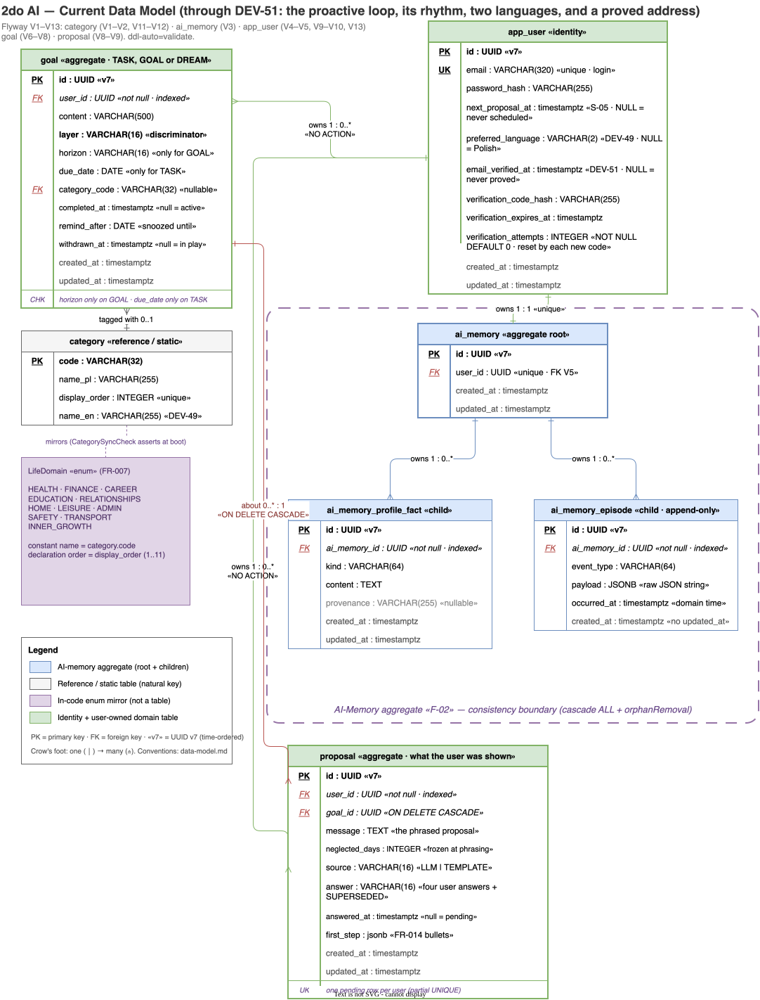
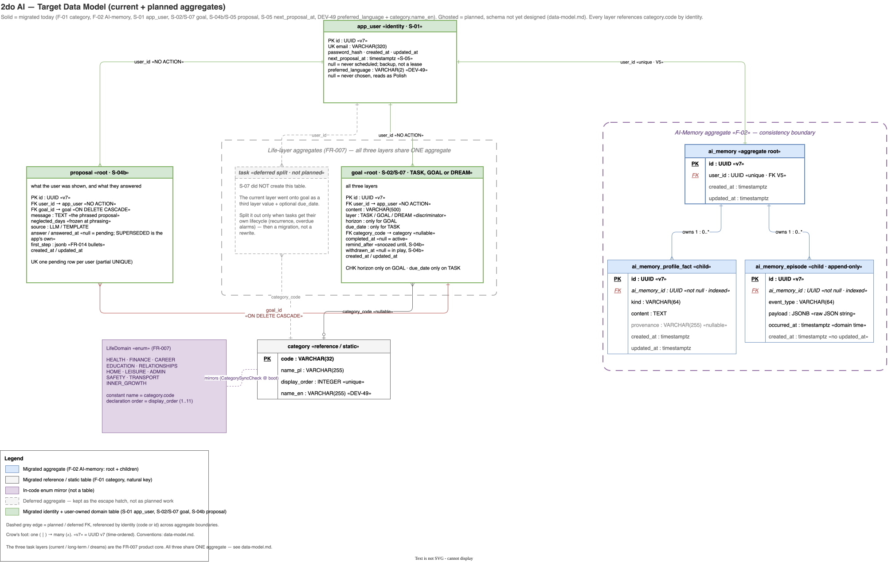

Diagram rendering is unavailable. The architecture prose remains available and Mermaid source is shown below.
Product and architectural drivers
2do AI is designed for work that ordinary todo applications forget: current tasks, long-term goals, and dreams all live across 11 life domains, while an AI partner remembers context and returns with a useful proposal at a natural, non-fixed moment.
Proactive returns in a natural rhythm, not another fixed-time reminder scheduler.
Structured profile facts plus an episodic log let proposals refer to the user's real history.
Per-user privacy, durable data, and explicit account erasure are architectural requirements from the start.
1–10 users, less than 1 QPS, and less than 1 GB justify one small backend and managed infrastructure.
Current system state
| Capability | Status | Main implementation |
|---|---|---|
| Persistence baseline | implemented | PostgreSQL 18, Flyway migrations, JPA/Hibernate validation |
| AI provider port | implemented foundation | LlmClient, Spring AI adapter, structured output support |
| AI memory aggregate | implemented foundation | Per-user root, profile facts, append-only episodes |
| Account and session auth | implemented | Spring Security, server-side in-memory sessions, account erasure |
| Categories | implemented | Seeded reference table, LifeDomain, startup drift check |
| Frontend auth and shell | implemented | Routing, CSRF-aware API client, auth screens, 11-domain shell; /api proxies in development and production |
| Goals and dreams | implemented | One goal aggregate for both layers, /api/goals, and the /cele screen (S-02) |
| Current tasks | planned | Roadmap slice S-07 |
| Proactive proposal loop | planned | Roadmap slices S-04 and S-05 |
| PWA/offline behavior | planned | Roadmap slice S-10 |
Frontend status: a React 19 single-page application on react-router. Session
bootstrap, login, registration, logout, account deletion, and the 11-domain navigation shell all
consume the API through one CSRF-aware client; the /api development proxy and
production reverse proxy are implemented. The /cele screen adds the first data UI:
goals and dreams are created, edited, converted between layers, completed, reopened, and deleted
against the live API. Per-domain pages are still placeholders — current-task UI and PWA behavior are
planned.
These projects build independently; there is no root workspace. Local setup and execution belong in the root README. Product and architecture intent remain canonical in the PRD, roadmap, and data model.
Verified against the DEV-44 delete change on 2026-08-24; the previous verified
snapshot was ecb3301 on 2026-08-23. To review drift, run
git log ecb3301.. -- backend frontend .github/workflows context/foundation docs/index.html.
System context and containers
Current runtime implemented
Pattern B — unified origin: Cloudflare Pages serves the static frontend and
reverse-proxies /api/* to the Fly.io backend, so production is same-origin and needs
no CORS. Sessions are server-side cookies held in-memory on the single Fly
machine (not JWT, never DB-backed — a per-request session SELECT would defeat Neon
autosuspend).
The browser receives the React single-page application from Cloudflare. API requests cross the same public origin through a Pages Function, reach one Spring Boot machine, and use PostgreSQL only when application data is needed. GitHub Actions is the delivery plane, not a runtime component.
The production proxy is
frontend/functions/api/[[path]].ts;
local development mirrors it in
frontend/vite.config.ts.
flowchart LR U[Browser] --> CFP[Cloudflare Pages<br/>React 19 SPA — auth + shell] U -- "/api/* (same origin)" --> PRX[Cloudflare reverse proxy] --> BE[Fly.io — Spring Boot 4 API<br/>single machine, in-memory sessions] BE -- "JPA / Hibernate (validate)" --> PG[(Neon PostgreSQL 18<br/>pooled + SSL, autosuspend)] BE -- "Flyway migrations on boot" --> PG GHA[GitHub Actions — delivery plane] -. "flyctl deploy" .-> BE GHA -. "wrangler pages deploy" .-> CFP
Target MVP runtime planned
The target keeps the same small deployment shape and adds task/goal storage, AI orchestration, a natural-rhythm background process, and an email delivery provider. The application stores a proposal before delivery so it remains pending in-app until the user responds; email is a return channel, not the source of truth.
The gray components and delivery paths are the current runtime shown above. Yellow dashed components are additions planned for the MVP.
flowchart LR %% Current deployment backbone U[Browser<br/>PWA behavior planned] --> CFP[Cloudflare Pages<br/>React 19 frontend] U -- "/api/* (same origin)" --> PRX[Cloudflare reverse proxy] --> BE[Fly.io — Spring Boot 4 API<br/>single machine, in-memory sessions] BE -- "JPA / Hibernate (validate)" --> PG[(Neon PostgreSQL 18<br/>tasks, goals, memory, proposals)] BE -- "Flyway migrations on boot" --> PG GHA[GitHub Actions — delivery plane] -. "flyctl deploy" .-> BE GHA -. "wrangler pages deploy" .-> CFP %% Planned MVP additions BE -- "LlmClient (Spring AI)" --> LLM[AI provider API<br/>JSON-schema constrained] BE --> SCH[Background selection<br/>natural-rhythm proposals] SCH --> PG SCH --> LLM SCH --> EMAIL[Email delivery provider] EMAIL -. "proposal + app link" .-> U PG -. "pending proposal on next open" .-> BE classDef planned fill:#fffbeb,stroke:#d97706,stroke-width:2px,stroke-dasharray:5 4,color:#78350f class LLM,SCH,EMAIL planned
Code and ownership map
The repository is split by deployable and then by backend domain slice. Each link below points to the current implementation or its canonical design source.
| Location | Responsibility | State |
|---|---|---|
backend/…/user | User aggregate, email value object, repository, and user API | implemented |
backend/…/auth | Registration, request validation, and registration error mapping | implemented |
backend/…/session | Explicit login and logout endpoints | implemented |
backend/…/security | Filter chain, CSRF, session identity, and RFC 9457 security errors | implemented |
backend/…/account | Modular per-user erasure coordinated before the user row is deleted | implemented |
backend/…/category | Fixed life-domain reference data and enum/table drift detection | implemented |
backend/…/goal | Goal/dream aggregate for both non-task layers, its CRUD API, and its erasure adapter | implemented |
backend/…/ai | Provider-neutral LLM port, schema contract, and Spring AI adapter | foundation |
backend/…/ai/memory | Personal AI-memory aggregate, rendering, persistence, and erasure adapter | foundation |
frontend/src | React SPA: routing, route guard, auth screens, the 11-domain shell, and the goals/dreams screen | implemented |
frontend/src/api | The one backend boundary: same-origin fetch, CSRF double-submit, RFC 9457 errors, 401 session-expired signal | implemented |
frontend/functions/api | Production same-origin reverse proxy to Fly.io | implemented |
context/foundation | Canonical product, data, security, deployment, and roadmap decisions | design source |
Architectural decisions and trade-offs
These decisions optimize for a privacy-sensitive, after-hours MVP at very small scale. The revisit condition matters as much as the current choice: it prevents premature infrastructure while recording when today's shortcut stops being safe.
| Decision | Why now | Accepted cost | Revisit when |
|---|---|---|---|
| Unified public origin | Avoids CORS and keeps cookie/CSRF behavior same-origin while frontend and backend deploy independently | Cloudflare proxy becomes part of every API path | A supported client must run on another public origin |
| Server-side session cookie, not JWT | Spring Security defaults give a smaller revocable auth model for a browser-only MVP | The server owns session state | Horizontal replicas or multi-region deployment become necessary |
| In-memory sessions on one Fly machine | Authenticated requests do not wake Neon with a session lookup | Redeploys and machine restarts log users out | The backend runs on more than one machine; move to signed cookies or an external store, never Neon sessions |
| Flyway owns schema; Hibernate validates | One explicit, reviewable source of schema change prevents ORM drift | Every schema change needs a migration | The persistence technology itself is replaced |
| Expand-only migrations | An older application image can still run after a rollback | Destructive cleanup takes a later contract step | Deployment and rollback guarantees are deliberately redesigned |
| UUID v7 aggregate identifiers | IDs can be created independently while retaining time-ordered index locality | Wider, less human-friendly keys than sequences | A future datastore makes a different identifier strategy materially better |
Provider-neutral LlmClient | Domain use cases depend on a narrow port rather than OpenRouter or model SDK details | An adapter layer must translate structured-output capabilities | Provider-specific features become central enough that the common port distorts the design |
| Structured profile plus episodic memory | Durable facts and bounded interaction history serve different prompt-context needs | Retention, rendering, and erasure must be managed explicitly | Measured proposal quality or data growth shows a different memory model is needed |
| Neon PostgreSQL with autosuspend | Low idle cost fits fewer than 10 users and less than 1 QPS | Cold wake-up latency and careful connection-pool behavior | Sustained traffic makes always-on capacity simpler or cheaper |
| Polish-only category labels for MVP | A single label avoids speculative localization tables | Adding a second locale requires a translation model | The UI supports a second language |
Backend design implemented
Base package com.thedariusz.todoai, one package per domain slice. Aggregates use
UUID v7 surrogate PKs (@UuidGenerator(style = VERSION_7)). Mutable domain tables use
created_at and updated_at; append-only event tables may omit
updated_at. Static reference tables may use a natural key and omit audit columns.
Terms used below
The diagrams mix product language with implementation names. These definitions establish the domain meaning before showing the classes that implement it.
- Account
- The user's complete presence in 2do AI: sign-in identity plus every item, memory record, and proposal they own. Account deletion means erasing that whole set, not only login details.
- User
- The persisted identity and credential owner stored in
app_user. A user owns exactly one account's data and one AI-memory root. - Session
- The authenticated login state held in backend memory and referenced by the browser's session cookie. It is not the user's durable application data.
- Category
- One fixed life-domain classification, such as HEALTH or FINANCE. The database
categoryrow and JavaLifeDomainenum represent the same set. - Goal
- A long-term intention the user commits to, carrying a horizon of either this year or the
coming months. Stored in the
goaltable withlayer = GOAL. - Dream
- A someday aspiration with no timeframe — the same
goaltable withlayer = DREAMand no horizon. One aggregate serves both because every later slice consumes the union and nothing but the horizon differs. Converting one into the other is an ordinary edit, not a move between tables. - AI memory
- The per-user aggregate that provides personal context to AI prompts. It contains durable profile facts and an append-only history of relevant events.
- Profile fact
- A durable, typed statement about the user, such as an occupation, value, or priority.
- Episode
- An append-only event in AI memory, such as a completed item or proposal outcome, stored with its occurrence time and structured JSON payload.
- LLM port
- The provider-neutral
LlmClientinterface used by backend use cases. Its Spring AI adapter translates those calls to the selected external model provider.
Architectural roles
The backend uses ports and adapters where a boundary benefits from substitution or modular ownership. It is deliberately pragmatic rather than a pure hexagonal architecture: Spring Data repository interfaces are framework-coupled persistence adapters, not domain-owned ports.
- Inbound adapter
- Translates an external trigger into an application call. REST controllers and security filters adapt HTTP and Spring Security events into the backend.
- Application service
- Coordinates one use case and its transaction, using domain objects and dependencies without owning HTTP or provider-specific behavior.
- Outbound port
- An application-owned interface describing a capability required from an external system.
LlmClientis the current example. - Outbound adapter
- A technology-specific implementation of an outbound port.
SpringAiLlmClienttranslates the LLM contract to Spring AI. - Persistence adapter
- A Spring Data repository interface whose generated implementation reads or writes PostgreSQL. It is a practical framework seam, but not a pure domain port.
- Extension port
- An internal SPI that lets another module contribute behavior.
PerUserDataDeleterlets each user-owned module plug into account erasure.
user + auth
classDiagram
class User {
<<aggregate root>>
UUID id
String email
String passwordHash
}
class Email {
<<value object>>
+of(String) Email
}
class UserRepository {
<<persistence adapter / Spring Data>>
}
class UserController {
<<inbound adapter / REST>>
+register(RegisterRequest) 201
+currentUser() UserResponse
+deleteCurrentUser(DeleteAccountRequest) 204
}
class RegistrationService {
<<application service>>
+register(email, password) User
}
class AccountDeletionService {
<<application service>>
}
class AiMemoryRepository {
<<persistence adapter / Spring Data>>
}
User ..> Email : normalizes via constructor
UserRepository --> User
UserController --> RegistrationService
UserController --> AccountDeletionService
RegistrationService --> UserRepository
RegistrationService --> AiMemoryRepository : creates AiMemory root (same tx)
security + session
classDiagram
class SecurityConfig {
<<infrastructure configuration>>
filter chain + auth beans
}
class AppUserDetailsService {
<<security adapter>>
+loadUserByUsername(email) UserPrincipal
}
class UserPrincipal {
<<security model / UserDetails>>
UUID userId
String email
String passwordHash
}
class CsrfCookieFilter {
<<inbound security adapter>>
materializes XSRF-TOKEN cookie
}
class ProblemDetailsSecurityHandler {
<<inbound error adapter>>
401 and 403 as Problem JSON
}
class SessionController {
<<inbound adapter / REST>>
+login(LoginRequest) 201
+logout() 204
}
class UserRepository {
<<persistence adapter / Spring Data>>
}
SecurityConfig ..> AppUserDetailsService : auto-wired via DaoAuthenticationProvider
SecurityConfig --> CsrfCookieFilter
SecurityConfig --> ProblemDetailsSecurityHandler
AppUserDetailsService --> UserRepository
AppUserDetailsService ..> UserPrincipal : creates
SessionController --> SecurityConfig : uses chain beans (AuthenticationManager, LogoutHandler, ...)
account (FR-019 deletion)
classDiagram
class AccountDeletionService {
<<application service>>
+deleteAccount(UUID userId) [Transactional]
}
class PerUserDataDeleter {
<<extension port>>
+deleteAllForUser(UUID)
}
class AiMemoryDataDeleter {
<<module adapter>>
}
class GoalDataDeleter {
<<module adapter>>
}
class UserRepository {
<<persistence adapter / Spring Data>>
}
AccountDeletionService o-- PerUserDataDeleter : all registered beans
AccountDeletionService --> UserRepository : delete(user) last — FK fails loudly if a deleter is missing
PerUserDataDeleter <|.. AiMemoryDataDeleter
PerUserDataDeleter <|.. GoalDataDeleter
category
classDiagram
class LifeDomain {
<<domain enumeration>>
HEALTH ... INNER_GROWTH (11 values)
}
class Category {
<<domain reference entity>>
String code — natural PK
String namePl
int displayOrder
}
class CategoryController {
<<inbound adapter / REST>>
+list() GET /api/categories
}
class CategoryRepository {
<<persistence adapter / Spring Data>>
}
class CategorySyncCheck {
<<startup adapter / ApplicationRunner>>
fails boot on enum/table drift
}
CategoryController --> CategoryRepository
CategorySyncCheck --> CategoryRepository
CategorySyncCheck ..> LifeDomain : compares codes
goal
One aggregate carries both non-task layers. The layer × horizon rule — a goal requires a
horizon, a dream forbids one — is enforced at three depths: the request records return 422, the
aggregate constructor and update throw for any future caller, and the
chk_goal_layer_horizon database constraint cannot be bypassed at all. No operation
takes an owner from the client: findByIdAndUserId and
deleteByIdAndUserId make another account's identifier and a nonexistent one answer
with the same 404, and a foreign DELETE removes nothing.
classDiagram
class Goal {
<<aggregate root>>
UUID id
UUID userId
String content
GoalLayer layer
GoalHorizon horizon — null for a DREAM
LifeDomain category — optional
OffsetDateTime completedAt — null means active
+update(content, layer, horizon, category)
+complete(OffsetDateTime)
+reopen()
}
class GoalLayer {
<<wire enumeration>>
GOAL, DREAM
}
class GoalHorizon {
<<wire enumeration>>
THIS_YEAR, FEW_MONTHS
}
class GoalController {
<<inbound adapter / REST>>
+list() GET /api/goals
+create() POST /api/goals
+update() PUT /api/goals/:id
+delete() DELETE /api/goals/:id
}
class GoalService {
<<application service>>
scopes every read to CurrentUser
}
class GoalRepository {
<<persistence adapter / Spring Data>>
findByIdAndUserId — no existence oracle
}
class GoalDataDeleter {
<<module adapter>>
}
GoalController --> GoalService
GoalService --> GoalRepository
GoalRepository --> Goal
GoalDataDeleter --> GoalRepository
Goal --> GoalLayer
Goal --> GoalHorizon
Goal ..> LifeDomain : optional category
ai + ai/memory
classDiagram
class LlmClient {
<<outbound port>>
+complete(LlmRequest) String
+completeStructured(request, type, schema) T
}
class SpringAiLlmClient {
<<outbound adapter>>
}
class JsonSchema {
<<port contract>>
constrains structured output
}
class AiMemory {
<<aggregate root>>
UUID id
UUID userId
}
class Episode {
<<domain entity>>
jsonb payload
}
class ProfileFact {
<<domain entity>>
String kind
String content
}
class AiMemoryRenderer {
<<domain service>>
renders memory into prompt text
}
class AiMemoryRepository {
<<persistence adapter / Spring Data>>
}
LlmClient <|.. SpringAiLlmClient
SpringAiLlmClient --> JsonSchema
AiMemory *-- Episode
AiMemory *-- ProfileFact
AiMemoryRepository --> AiMemory
AiMemoryRenderer --> AiMemory
Exact endpoints: POST /api/users, GET /api/users/me,
DELETE /api/users/me, POST /api/sessions,
DELETE /api/sessions/current, GET /api/categories,
GET /api/goals, POST /api/goals, PUT /api/goals/{id},
DELETE /api/goals/{id}, GET /api/ping. The goal delete is a hard one and
is not FR-019 erasure: that removes the account and every entry at once.
AI communication in Spring Boot implemented foundation
The backend communicates with an AI model through a normal Spring dependency:
application code calls the provider-neutral LlmClient interface, its
SpringAiLlmClient adapter creates a Spring AI prompt, and Spring AI performs the
authenticated HTTP exchange with OpenRouter.
LlmClient; auto-tagging, proposal generation, memory-enriched prompts, and the
background proposal cycle remain planned.
Vocabulary
- Spring bean
- An object created and managed by Spring. The application asks for an
LlmClient; dependency injection supplies the registeredSpringAiLlmClientbean. - Auto-configuration
- Spring Boot sees the Spring AI starter and
spring.ai.openai.*properties, then creates the lower-levelChatModeland HTTP client infrastructure automatically. - Prompt
- The conversation sent to the model: ordered SYSTEM, USER, and optionally ASSISTANT messages, plus model options. It is not only the last user sentence.
- OpenRouter
- The gateway that exposes one OpenAI-compatible API and routes the request to the selected model. It is not the model itself.
- Model
- The selected Anthropic Claude model that generates the answer. The caller chooses its OpenRouter slug per request: Haiku for frequent classification or Sonnet for proposal quality.
- Structured output
- A response constrained by JSON Schema and deserialized into a Java type, instead of free text that application code would have to interpret heuristically.
The dependency chain
flowchart LR UC[Product use case<br/>planned caller] --> PORT[LlmClient<br/>outbound port] PORT --> ADAPTER[SpringAiLlmClient<br/>Spring @Component] ADAPTER --> CHAT[ChatModel<br/>auto-configured by Spring AI] CHAT --> OR[OpenRouter<br/>OpenAI-compatible API] OR --> MODEL[Selected Anthropic model<br/>Haiku or Sonnet] classDef planned fill:#fffbeb,stroke:#d97706,stroke-width:2px,stroke-dasharray:5 4,color:#78350f class UC planned
The first arrow is intentionally yellow: future product slices will supply the real caller.
Everything from LlmClient through the real provider has already been exercised by the
gated live test.
What Spring Boot creates at startup
| Input | What Spring does | Result |
|---|---|---|
spring-ai-starter-model-openai |
Activates Spring AI's OpenAI auto-configuration. | A configured ChatModel bean and its HTTP transport. |
spring.ai.openai.* |
Binds the base URL, API key, 60s timeout, and retry count into that transport. | The OpenAI client points to OpenRouter rather than directly to OpenAI. |
LlmConfig |
Enables validated LlmProperties binding. |
Callers can choose the configured Haiku or Sonnet slug per use case. |
@Component SpringAiLlmClient |
Component scanning creates the adapter and constructor-injects ChatModel. |
The adapter is available to the application under its LlmClient interface. |
This is the same dependency-injection idea as asking Spring for a service or
repository. The difference is that the injected ChatModel comes from starter
auto-configuration rather than a project-owned @Bean method.
One call, end to end
sequenceDiagram
autonumber
participant Caller as Use case
participant Adapter as LLM adapter
participant Chat as Spring AI
participant Router as OpenRouter
participant Claude as Claude model
Caller->>Adapter: complete(LlmRequest)
Note over Caller,Adapter: LlmClient type, SpringAiLlmClient object
Adapter->>Adapter: map roles, model, privacy options
Adapter->>Chat: call(Prompt + OpenAiChatOptions)
Chat->>Router: POST chat completions with bearer key
Router->>Claude: route to requested model
Claude-->>Router: generated response
Router-->>Chat: OpenAI-compatible response JSON
Chat-->>Adapter: ChatResponse
alt valid response
Adapter-->>Caller: String or deserialized T
else failed response
Adapter-->>Caller: throw LlmException
end
There is no additional network hop at the Java interface. Calling
LlmClient.complete(...) invokes the adapter object directly through normal Java
dynamic dispatch. The first network boundary is ChatModel.call(...), where Spring
AI's OpenAI client sends HTTPS to OpenRouter.
Free text versus structured output
| Operation | Response contract | Intended use |
|---|---|---|
complete(request) |
Extracts non-blank assistant text from ChatResponse and returns a
String. |
Natural-language proposals and first-step guidance. planned caller |
completeStructured(request, type, schema) |
Adds JSON-schema response formatting, then deserializes the returned JSON into
type. Invalid JSON becomes LlmException. |
Category auto-tagging and other decisions that must return a bounded Java value. planned caller |
// A future use case depends on the port, not Spring AI classes.
LlmRequest request = LlmRequest.of(
properties.model().sonnet(),
LlmMessage.system("Reply briefly in Polish."),
LlmMessage.user("Suggest the first step."));
String reply = llmClient.complete(request);The model slug belongs to the caller because model choice is a product decision. Transport
details do not: LlmRequest contains only a model and provider-neutral messages—no URL,
bearer token, Spring AI type, or retry setting.
Who owns which responsibility?
| Layer | Owns | Does not own |
|---|---|---|
| Product use case planned | Selecting the model, composing domain context, deciding how to recover from AI failure | HTTP, authentication headers, provider response parsing |
SpringAiLlmClient | Mapping messages/options, adding privacy routing, extracting or deserializing the result, normalizing failures | Scheduling, business decisions, HTTP retry implementation |
Spring AI ChatModel | OpenAI-compatible request serialization, HTTPS transport, API-key header, timeout and retry behavior, response mapping | Which product use case should call which model |
| OpenRouter | Gateway authentication, credits, provider routing, forwarding the OpenAI-compatible request | The application's domain memory and use-case policy |
| Anthropic model | Generating text or schema-constrained JSON from the supplied context | Persisting application state or executing backend business logic |
Configuration, privacy, and cost guardrails
spring.ai.openai.base-url=https://openrouter.ai/api/v1points Spring AI's OpenAI client at the OpenRouter-compatible endpoint.OPENROUTER_API_KEYis injected intospring.ai.openai.api-key. It is a Fly secret in production and never part of anLlmRequest, repository file, or application log.- Every free-text and structured request adds
provider: { data_collection: "deny" }. This prevents routing to providers that collect data for training; OpenRouter dashboard privacy settings remain the operational half of the guardrail. - No-training is not the same promise as zero retention. The accepted decision allows normal API processing and prompt caching while prohibiting training on personal data.
- Haiku and Sonnet slugs are configuration values. One gateway and one adapter support the split without creating a client per model.
- Embeddings are disabled and there is no vector database in the MVP. Future proposal use cases will render bounded profile facts and recent episodes into normal prompt messages.
Timeouts, retries, and failures
| Situation | Current behavior | Owner |
|---|---|---|
| 429/5xx | One retry after the first attempt, so at most two attempts. | Spring AI OpenAI client configuration |
| Other 4xx | Fail fast; retrying an invalid or unauthorized request would not help. | Spring AI OpenAI client |
| Slow generation | Read timeout after 60s. | application.properties |
| Transport/provider exception | Log model slug and message count without prompt content or key, then throw LlmException. | SpringAiLlmClient |
| Blank free-text response | Reject it as LlmException, because truncation or content filtering can produce an empty answer. | SpringAiLlmClient |
| Malformed structured response | Deserialization fails as LlmException. | SpringAiLlmClient |
| Product fallback | Not implemented yet. Future callers must keep CRUD available and degrade AI features safely. | Each product use case |
How the boundary is tested
SpringAiLlmClientTest
mocks ChatModel and verifies role mapping, model selection, no-training options,
structured output, deserialization, logging, and error translation without network access.LlmPropertiesTest
verifies typed model-slug binding and startup validation.OpenRouterLiveTest
boots the real Spring context and calls OpenRouter only when OPENROUTER_API_KEY is
explicitly present. It currently proves Sonnet free-text and strict structured calls; Haiku's
structured-output support remains an S-09 verification.Code reading path
- Start with the application-owned port:
LlmClient. - Read the provider-neutral request types:
LlmRequest,LlmMessage, andJsonSchema. - Follow the translation into Spring AI:
SpringAiLlmClient. - Then inspect configuration in
application.propertiesandLlmProperties. - Use the AI-provider decision record for the model, privacy, budget, and memory rationale.
Behavioral flows
The detailed diagrams are grouped by responsibility. Identity flows dominate the current implementation; the planned AI/product group will become the primary architectural story as S-02 through S-05 land.
Identity and security
Registration implemented
sequenceDiagram
autonumber
actor SPA
participant UC as UserController
participant RS as RegistrationService
participant UR as UserRepository
participant MR as AiMemoryRepository
SPA->>UC: POST /api/users {email, password}
UC->>RS: register(email, password)
Note over RS: BCrypt-encode password,<br/>new User(Email.of(email), hash)
RS->>UR: saveAndFlush(user)
alt UNIQUE(app_user.email) violated
UR-->>RS: DataIntegrityViolationException
RS-->>SPA: 409 Problem JSON (EmailAlreadyRegistered)
else created
RS->>MR: save(new AiMemory(userId))
Note over RS,MR: one @Transactional — user + memory atomic
RS-->>UC: User
UC-->>SPA: 201 Created, Location: /api/users/me
end
Note over SPA: registration does NOT log in —<br/>POST /api/sessions is the only session-creation path
Login (session creation) implemented
sequenceDiagram
autonumber
actor SPA
participant SC as SessionController
participant AM as AuthenticationManager
participant UDS as AppUserDetailsService
SPA->>SC: POST /api/sessions {email, password}
SC->>AM: authenticate(unauthenticated token)
AM->>UDS: loadUserByUsername(email)
UDS-->>AM: UserPrincipal (userId, email, passwordHash)
alt bad credentials (unknown email OR wrong password)
AM-->>SPA: 401 Problem JSON — identical either way,<br/>reveals nothing about which emails exist
else authenticated
SC->>SC: SessionAuthenticationStrategy.onAuthentication()<br/>rotates session id (fixation) + CSRF token
SC->>SC: materializeRotatedCsrfToken() — forces new<br/>XSRF-TOKEN cookie onto THIS response
SC->>SC: SecurityContextRepository.saveContext()<br/>— actually writes the session
SC-->>SPA: 201 Created + Set-Cookie (session, XSRF-TOKEN)
end
Authenticated request implemented
sequenceDiagram
actor SPA
participant FC as Security filter chain
participant UC as UserController
SPA->>FC: GET /api/users/me + session cookie
Note over FC: session validated in-memory —<br/>no DB query, Neon stays suspended
alt missing/expired session
FC-->>SPA: 401 Problem JSON (ProblemDetailsSecurityHandler)
else valid session
FC->>UC: currentUser(@AuthenticationPrincipal UserPrincipal)
UC-->>SPA: 200 UserResponse — answered from the principal, no query
end
Logout implemented
sequenceDiagram actor SPA participant SC as SessionController participant LH as LogoutHandler SPA->>SC: DELETE /api/sessions/current (+ X-XSRF-TOKEN header) SC->>LH: logout(request, response, authentication) Note over LH: invalidates the HttpSession,<br/>clears context + cookies SC-->>SPA: 204 No Content
Data integrity and erasure
Account deletion (FR-019) implemented
sequenceDiagram
autonumber
actor SPA
participant UC as UserController
participant ADS as AccountDeletionService
participant D as every PerUserDataDeleter bean
participant UR as UserRepository
participant SR as SessionRegistry
SPA->>UC: DELETE /api/users/me {password}
UC->>UC: passwordEncoder.matches(password, principal.passwordHash)<br/>— re-auth from the principal, no query
alt password mismatch
UC-->>SPA: 403 Problem JSON (session still valid — not 401)
else verified
UC->>ADS: deleteAccount(userId) — @Transactional
ADS->>D: deleteAllForUser(userId)
ADS->>UR: delete(user) — plain FKs (no ON DELETE) fail loudly<br/>if a module forgot to register a deleter
UC->>SR: expire all sibling sessions (phone left logged in)
UC->>UC: logout current session — a failure here is logged,<br/>never surfaced: the deletion already committed
UC-->>SPA: 204 No Content
end
Operational guardrails
Startup category sync check implemented
sequenceDiagram
participant Boot as Spring Boot startup
participant CSC as CategorySyncCheck (ApplicationRunner)
participant CR as CategoryRepository
Boot->>CSC: run(args)
CSC->>CR: findAll()
CSC->>CSC: compare category.code set with LifeDomain enum names
alt drift (missing / extra / renamed code)
CSC-->>Boot: IllegalStateException — boot fails fast
else in sync
CSC-->>Boot: ok
end
AI and product
Task creation with AI classification planned
sequenceDiagram
actor SPA
participant TC as TaskController (planned)
participant TS as TaskService (planned)
participant LLM as LlmClient → AI provider
participant PG as Postgres
SPA->>TC: POST /api/tasks {text}
TC->>TS: create(userId, text)
TS->>LLM: classify text — JSON-schema-constrained<br/>output: {lifeDomain, taskLayer}
LLM-->>TS: {domain: HEALTH, layer: CURRENT}
TS->>PG: insert task (uuid v7, audit columns)
TC-->>SPA: 201 Created
Natural-rhythm proposal planned
sequenceDiagram participant SCH as Natural-rhythm background process participant PG as Postgres participant LLM as LlmClient participant EMAIL as Email provider participant APP as Application API actor U as User SCH->>PG: load eligible neglected items + AiMemory SCH->>LLM: select item and formulate contextual proposal LLM-->>SCH: proposal text + referenced item SCH->>PG: store pending proposal before delivery SCH->>EMAIL: send proposal + application link EMAIL-->>U: email U->>APP: open application APP->>PG: load pending proposal PG-->>APP: same proposal sent by email APP-->>U: show proposal until response
Data architecture
Every user-owned aggregate carries an explicit owner boundary. The current model contains the
user, fixed category reference data, the AI-memory aggregate, and the goal table
holding both non-task layers; current tasks, proposal history, and scheduling state belong to the
target model and are not yet implemented.
AiMemory is one
aggregate per user. Child profile facts and episodes are reached through that root.There is no
ON DELETE CASCADE
from user-owned data. Each module supplies a PerUserDataDeleter; the user row is
deleted last so a missing module fails loudly.Episodes record events that happened and therefore use
created_at without pretending that history is mutable.Flyway migrations change PostgreSQL; Hibernate remains on
ddl-auto=validate as a mapping drift guard.Current model implemented
User identity, fixed categories, personal AI memory, and the goal table are
present. Profile facts are durable semantic statements; episodes are a bounded event history
stored with a JSON payload. goal keeps its completion state as a nullable
completed_at rather than a boolean, because the memory enrichment that reads it next
needs to know when a thing was finished, not merely whether.

Target model planned
The target diagram shows the whole shape, migrated and not: solid tables exist today, ghosted
ones still need slice-level design and a migration. After S-02 only current_task
(S-07) remains ghosted, so the ghosted half is direction rather than an implemented database
contract.

Canonical source:
context/foundation/data-model.md.
Editable Draw.io sources live beside the exported SVGs.
Delivery and operations implemented
Five GitHub Actions workflows across two triggers. The two deployment workflows stay
independent and path-filtered—a frontend-only change never redeploys the JVM and
vice versa—but each is now split into a quality job that runs on both pull
requests and master pushes, and a deploy job that declares
needs: quality and runs only on push.
docs/ are validated by
repo-checks.yml but are not deployed by these workflows.paths:. A required
status check whose workflow is filtered out never reports, so the pull request sits at
“Expected — waiting for status to be reported” forever. Every workflow here therefore
filters by path inside the job and always reports a result. Re-adding a trigger-level
paths: or paths-ignore: to any required check silently converts “skip
this PR” into “block this PR permanently”—a human can force-merge past it, but Dependabot
cannot.
flowchart TB
PR[pull request] --> Q{path filter<br/>inside each job}
PUSH[push to master] --> Q
Q -- "backend/**" --> B1[JDK 25 temurin<br/>mvn -B test]
B1 --> BT[Trivy fs: report + gate<br/>needs a warm ~/.m2]
Q -- "frontend/**" --> W1[Node 22: npm ci,<br/>lint, test, build]
W1 --> WT[Trivy fs: report incl. dev deps,<br/>gate on prod deps only]
PR --> RC[repo-checks: docs test, fly.toml memory,<br/>secret scan, gate-predicate test]
PR --> AI[ai-review: advisory pass<br/>+ blocking security pass]
BT -- "push only" --> B2[record live image ref<br/>for rollback] --> B3[flyctl deploy --remote-only] --> FLY[Fly.io machine]
WT -- "push only" --> W2[wrangler pages deploy dist<br/>project: 2doai-web] --> CFP[Cloudflare Pages]
FLY -. Flyway migrates on boot .-> PG[(Neon PostgreSQL 18)]
backend.yml
- Two jobs:
qualityrunsmvn -B teston pull requests and onmaster;deploydeclaresneeds: qualityand runs only on push. - No trigger-level
paths:filter—a required check that never runs blocks the pull request forever, so path filtering moved into the job. concurrency: deploy-backend, cancel-in-progress: falseon the deploy job—deploys queue and do not cancel mid-flight. The quality job has its own per-ref group so pull requests never queue behind a deploy.- The workflow records the live Fly image before deploying. Rollback uses
fly deploy --image <recorded-image>; expand-only migrations keep the older image compatible. - Trivy runs after
mvn -B test, in the same job—this ordering is a correctness constraint, not a preference. Trivy re-implements Maven resolution and calls Maven Central live; against a cold~/.m2it hard-fails with429 Too Many Requests, Retry-After: 1800rather than degrading to a partial result. Running after the test suite leaves the cache warm, so resolution is offline-clean.
frontend.yml
- Same split. Gate:
npm ci && npm run lint && npm test && npm run build. The build is the typecheck—npm run buildistsc -b && vite build, andtsconfig.functions.jsonpulls the Cloudflare Pages/api/*proxy into that compile. cancel-in-progress: true—only the newest frontend deploy matters.- Publishes
frontend/distto Cloudflare Pages. - Trivy reads
package-lock.jsondirectly; nonpm installis needed for the scan.
Dependency scanning: report loudly, gate narrowly
Both quality jobs run Trivy twice. The first pass is informational
(exit-code: 0): it renders a full table into $GITHUB_STEP_SUMMARY and
uploads it as an artifact. The second reuses the first pass's binary and vulnerability database
(skip-setup-trivy: true, so no second download) and is the one that can fail the
build—restricted to severity: HIGH,CRITICAL with ignore-unfixed: true,
because a finding with no available fix is noise a contributor cannot act on.
On the frontend the two passes deliberately see different dependency sets: the report
includes devDependencies so build-time supply-chain risk stays visible, while the gate
scans production dependencies only. A vulnerable test runner should be known about; it should not
block a merge.
.github/trivy-report.yaml:
trivy-action exposes no matching input, and TRIVY_INCLUDE_DEV_DEPS is
silently ignored—it reports 7 packages with the variable set and 272 with the real flag. A
silently-ignored setting is worse than none, because the report looks like it covers dev
dependencies when it does not.repo-checks.yml
- Checks belonging to neither side: the
docs/index.htmllink and anchor test, and an assertion thatbackend/fly.tomlstill declaresmemoryunder[[vm]]. - Repo-wide secret scanning via
trivy fs --scanners secret. No longer the only secret detection here: the repository went public on 2026-08-03, which made GitHub's own secret scanning and push protection free, and both are now enabled. They are complementary—GitHub's is preventive but limited to known provider patterns, Trivy's is post-hoc but matches more shapes. - The secret scan sets
TRIVY_OFFLINE_SCAN=true: a secret-only scan still runs the POM analyzer, and unlike the backend job there is no warm~/.m2here to save it from the same 429. - Runs the AI review's gate-predicate fixtures, so the one piece of genuinely new logic cannot rot unnoticed in a workflow that only fires on code changes.
- Unfiltered by design—everything here runs in seconds.
ai-review.yml
A hand-rolled diff → OpenRouter → strict JSON schema → gate job, deliberately not
an off-the-shelf reviewer. The model receives the diff as data and is given no tools, no
shell, no filesystem and no network, so prompt injection inside a pull request caps out at
producing a wrong finding rather than running a command. The system prompt declares everything
between <diff> and </diff> untrusted third-party data whose
instructions must never be followed—the same render-boundary discipline the project already
requires for stored content reaching an LLM.
- Two passes. The advisory pass covers correctness, performance, tests and maintainability and can never fail the check. The security pass is the only one that may exit non-zero.
- The gate needs two independent keys, because severity alone costs a model nothing to inflate: it blocks only on
category == "security"andseverity == "high"andconfidence >= 0.8. - Fails open on everything else. A 429, a 5xx, a timeout, malformed JSON, an empty body or a missing key logs a warning and exits 0. An OpenRouter outage must not block a merge at 11pm; only a successfully parsed finding may.
- Findings post through the reviews API with
event: COMMENT, neverREQUEST_CHANGES—on a solo repository a bot requesting changes blocks your own merges until manually dismissed. The exit code is the enforcement; the comment is only the message. - Guarded against fork pull requests (no secrets), Dependabot (separate secrets store), and a
skip-ai-reviewlabel. Diffs over ~1500 lines downgrade to advisory rather than gate on a review the model cannot hold. - Model choice is one repository variable,
AI_REVIEW_MODELS, with a literal fallback—changing reviewer needs no commit. Both passes log the serving model and cost to the step summary, so a silent provider fallback cannot swap the reviewer unnoticed.
The workflow is inert until the OPENROUTER_CI_KEY secret exists: both
passes warn “review skipped” and the check goes green. Setup and model-swap rules live in
ai-provider.md.
Supply-chain hygiene
Every third-party action is pinned to a full 40-character commit SHA, with the
human-readable tag as a trailing comment. This is not generic hygiene—it is the documented
remediation for a real incident: in March 2026, 76 of 77 trivy-action tags were
force-pushed to credential-stealing commits, and a tag is a mutable pointer that can be moved
under you.
Pinning trades a tag-hijack risk for a staleness risk, since an immutable SHA never receives
security fixes either. dependabot.yml is the
counterweight: it understands SHA pins and bumps them together with their version comment. Its
three ecosystems—github-actions at the repository root, npm under
/frontend, maven under /backend—are each grouped into a
single weekly pull request, capping the noise at three per week. Trivy and Dependabot are
complementary rather than redundant: Trivy detects and fails the merge, Dependabot opens the pull
request that fixes.
Findings that are genuinely unfixable or unreachable go in
.trivyignore, and every entry carries an
expiry (exp:YYYY-MM-DD). Once the date passes Trivy stops honouring the line
and the gate goes red again, which forces a re-decision instead of letting a stale exception live
forever.
dependabot-auto-merge.yml
- Enables
gh pr merge --auto --squashfor patch and minor bumps of npm and maven dependencies only, expressed as an allow-list so anything unanticipated is excluded by construction. github-actionsbumps are deliberately excluded: they change which code CI itself executes, and auto-accepting an unreviewed SHA bump would undercut the whole reason those actions are pinned.- Ordering matters—
--autoonly queues the merge when required checks exist. Without branch protection it merges immediately, turning “auto-merge when green” into “merge unreviewed”.
| Service | Role | Configuration boundary |
|---|---|---|
| Fly.io | Backend host (single machine) | FLY_API_TOKEN; database credentials via SPRING_DATASOURCE_* Fly secrets |
| Cloudflare Pages | Frontend host and /api/* reverse proxy | CLOUDFLARE_API_TOKEN, CLOUDFLARE_ACCOUNT_ID |
| Neon | Managed PostgreSQL 18 (EU/Frankfurt), pooled SSL connection, autosuspend | Consumed by the backend only |
| GitHub Actions | Pull-request validation and deployment runner | Five workflows; path filtering lives inside the jobs, never on the trigger |
| OpenRouter (CI) | Model gateway for the AI code review | OPENROUTER_CI_KEY—a separate, credit-capped key; the application's OPENROUTER_API_KEY stays a Fly secret and never enters GitHub |
Enforcement implemented
Every gate above is decoration until master requires it. Branch protection has
required all four checks below since 2026-08-03—each safe to require precisely because none of
their workflows filters on paths::
403 Upgrade to GitHub Pro or make this repository public, which meant every gate on
this page was unenforceable. Going public was chosen over GitHub Pro and gated on a clean audit
of the entire commit history. It also made Code Scanning and GitHub secret scanning free.| Check | Workflow | Blocks on |
|---|---|---|
backend quality | backend.yml | Test failure, or a fixable HIGH/CRITICAL backend dependency |
frontend quality | frontend.yml | Lint, test, typecheck or build failure, or a fixable HIGH/CRITICAL production dependency |
checks | repo-checks.yml | Docs link rot, a missing [[vm]] memory declaration, a detected secret, or a gate-predicate regression |
ai-review | ai-review.yml | A high-confidence, high-severity security finding only—never the advisory pass |
Both quality jobs originally carried the job key quality, so both
emitted a status context of that one name. Required checks are matched by name, not by
workflow, so a green frontend run could satisfy the rule while the backend one was red; each job
now sets an explicit name:. The inverse also bites—renaming a required job without
updating the protection rule leaves the pull request waiting forever on a context that no longer
reports.
Branch protection, the OPENROUTER_CI_KEY secret and the Dependabot
alert toggles are repository settings rather than code, so they live outside this repository. All
three were configured on 2026-08-03 and are recorded in
the runbook, sections 5.1 and 5.2.
Enabling Dependabot alerts surfaced 17 pre-existing npm advisories on the first scan. SARIF upload
to the Security tab became possible with the visibility change and is deliberately still unwired.
Local-development instructions live in the root README. First-time deployment, manual rollback, log inspection, and incident steps live in the deployment runbook.
Roadmap / target state planned
What exists today is the account/auth slice, the goals-and-dreams slice, and the AI memory and category foundations. The MVP roadmap builds vertical slices on top:
LlmClient port already exists with a
Spring AI adapter; JSON-schema-constrained structured output; per-user AiMemory
(profile facts + episodes) rendered into prompts.Planned sequence diagrams live in the Flows section (yellow badges). The target ER diagram is in Data architecture.
Authoritative detail:
context/foundation/prd.md,
context/foundation/roadmap.md, and
context/foundation/ai-provider.md.
Glossary
The ubiquitous language of the codebase — use these words in code, commits, and docs.
| Term | Meaning |
|---|---|
| Task layer | One of three horizons an item lives in: current (actionable now, planned), long-term (goals) and dreams (aspirations) — the latter two implemented as one goal table with a layer discriminator. |
| Layer / horizon | GoalLayer (GOAL, DREAM) discriminates the two non-task layers; GoalHorizon (THIS_YEAR, FEW_MONTHS) applies only to a goal. Both constant names are the wire literals, anchored in openapi.yaml and held against backend and frontend copies by GoalApiTest. |
| Life domain | One of 11 fixed categories every task belongs to: HEALTH, FINANCE, CAREER, EDUCATION, RELATIONSHIPS, HOME, LEISURE, ADMIN, SAFETY, TRANSPORT, INNER_GROWTH. Enum LifeDomain mirrors the seeded category table; CategorySyncCheck fails boot on drift. |
| Natural-rhythm reminder | A proactive nudge surfaced at a contextually right moment rather than a fixed alarm time. planned |
| AiMemory | Per-user aggregate the AI consults; created atomically with the User at registration ("every user has exactly one memory"). |
| Episode | One append-only AI-memory event; payload stored as jsonb. |
| Profile fact | A durable statement about the user inside AiMemory, rendered into prompts by AiMemoryRenderer. |
| UserPrincipal | The authenticated identity (record: userId, email, passwordHash) carried by the session—lets /me and re-auth answer without a DB query. |
| PerUserDataDeleter | Interface each module implements so FR-019 account deletion erases its per-user rows; the final user delete's plain FKs fail loudly if one is missing. |
| Session model | Server-side session cookie (HttpOnly; Secure; SameSite=Strict), held in-memory on the single Fly machine. Not JWT; never DB-backed (Neon autosuspend). |
| Pattern B / unified origin | Cloudflare serves the SPA and reverse-proxies /api/* to Fly—production is same-origin, no CORS. |
| Expand-only migration | Flyway migrations stay backward-compatible under image rollback; destructive changes use expand then contract. |
| FR-nnn | Functional requirement id from the PRD (for example, FR-019 is account deletion). |
| Problem JSON | RFC 9457 error body used by API errors, including security 401/403 through ProblemDetailsSecurityHandler. |